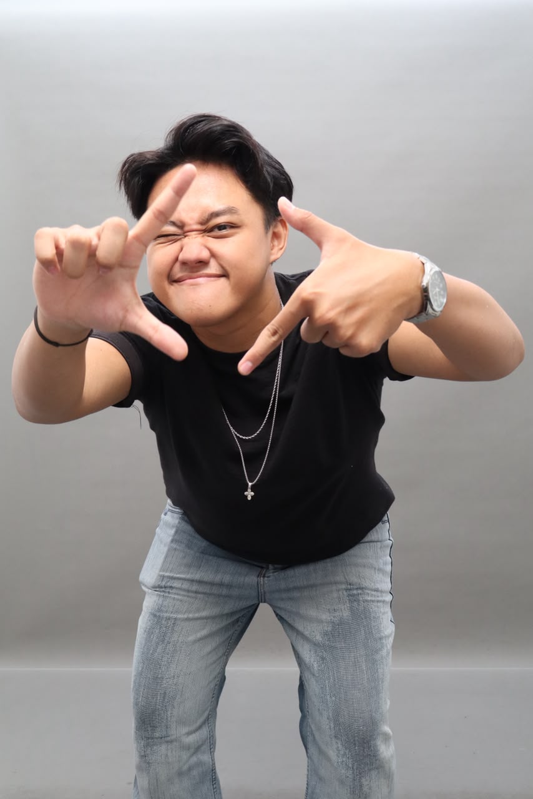

Terbuka untuk peluang baru Surabaya, Indonesia
Data Science · AI · Problem Solving
Ardiansyah
Indra Febrianto.
Saya seorang Data Scientist
Lulusan Sains Data PENS yang sehari-hari berkutat dengan Machine Learning, Deep Learning, dan LLM. Saya biasa mengerjakan model forecasting, pipeline verifikasi, dan sistem rekomendasi berbasis teks.

IPK PENS3.78 / 4.00
FinalistSamsung SFT '24
Tentang saya
Saya suka membongkar masalah,
lalu menguji jawabannya.
Saya Ardi. Saya bekerja dengan data, model ML, dan LLM untuk kebutuhan prediksi, verifikasi, dan rekomendasi.
Bidang yang paling sering saya garap adalah Machine Learning, Deep Learning, LLM, dan probabilistic forecasting. Biasanya saya mulai dari memahami masalah dan mengecek asumsi, baru kemudian menulis pipeline atau melatih modelnya.
PENS
Pendidikan
3.78 / 4.00
D4 Sains Data
Politeknik Elektronika Negeri Surabaya · Agustus 2022–Juli 2026
01
AI, Machine Learning & LLM
LSTM · NLP · Time-Series · TensorFlow · PyTorch · Keras · Scikit-learn · LangChain
02
Programming & Data
Python · SQL · R · HTML · JavaScript · PHP · Pandas · NumPy · PostgreSQL
03
Design & Collaboration
Figma · Git · GitHub · Docker · GCP · Grafana · Tableau · Streamlit
Pengalaman
Dari technical assessment
hingga memimpin tim.
Saya pernah menangani pipeline verifikasi dengan Python dan memimpin komunikasi organisasi. Dua jenis pekerjaan yang berbeda, tapi sama-sama menuntut ketelitian.
Projek pilihan
Yang saya bangun,
dan alasan di baliknya.
Pencapaian
Dari kompetisi sampai
berbagi ke 79 siswa.
Mari terhubung
Ada pekerjaan atau ide
yang ingin dibahas?
Lagi cari partner diskusi soal AI dan Data Science, atau ada peluang kerja yang cocok? Kirim pesan lewat form atau langsung sapa saya di LinkedIn.